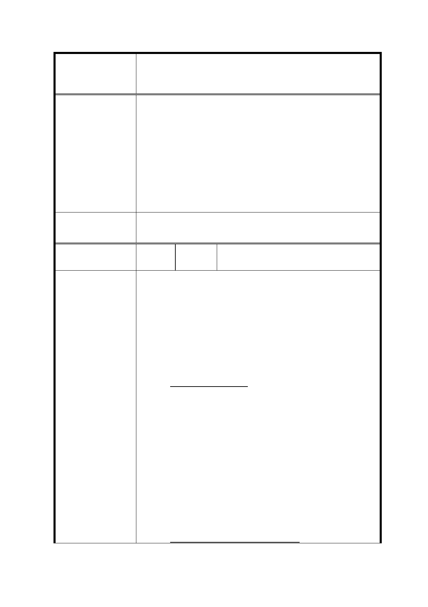

修訂臺北市信義計畫地區細部計畫（第三次通盤
案 名 檢討）案
益，故建議仍維持原公展規定，即特定業務區（B2-B14、C1、
D1-D7、E1-E5）除特種零售業、特種服務業、殮葬服務業等不
得使用外，餘比照臺北市土地使用分區管制自治條例第三種商
業區之使用規定辦理。惟為塑造連續本區沿街商業活動，規定
建築物一樓及二樓不得作住宅、停車及管委會使用，且商業使
用樓地板面積總和須大於法定建築面積之 70％乘以 2 倍；申請
增額容積、移入容積或各類獎勵容積者，一樓至四樓不得作住
宅、停車及管委會使用，且商業使用樓地板面積總和須大於法
定建築面積之 70％乘以 4 倍。
委 員 會 決 議 同決議三。
編
號 37
莊○慧、吳○珠、許○煜、許○毓、許○
陳情人
銘等 5 人
「臺北市信義計畫地區細部計畫（第三次通盤檢討）案」此案
於公展階段並未限制「特定業務區」不得住宅使用，但是卻於
朱案小組審查會議中於未公告之狀況下，增訂『「特定業務區」
不得住宅使用』之條例。此舉已嚴重損害到信義區內各所有權
人的權利與利益，至今多數地主或屋主尚不知此條例。任何細
部計畫的變更應讓民眾即時參與並舉辦公聽會議，此提案應立
即更正並重新公開展覽，避免違反都市更新事業作業流程與其
設立的精神。
1. 有違公平與公義原則
政府訂定之條例應該以公平公義為第一考量，保護人民使有
陳情理由
同等的權利。修訂案中僅只限制信義區 D1、D3、B5、B7「特
定業務區」區內尚未開發或請照的基地不得住宅使用，其他
現有開發的地塊並不納入此限制之內。此舉已經違反了公平
與公義的原則。更甚者勢必造成現有信義區內豪宅價格瞬間
暴漲，加深因為此條例受影響所有權人的損失。依據第一次
專案小組之會議紀錄，委員於會議中也建議都發局應多方考
量此條例的實施。此限制未來將造成大眾反彈，喪失民眾對
政府的信任度。都市計畫不應以「商業區豪宅化」或其他模
糊的口號來作為政策制定的依據。臺北市未來的其他商圈如
果遭遇類似的狀況，是否也要依此違反公益的方式處理？
2. 有違原始信義區細部計畫規劃精神
53